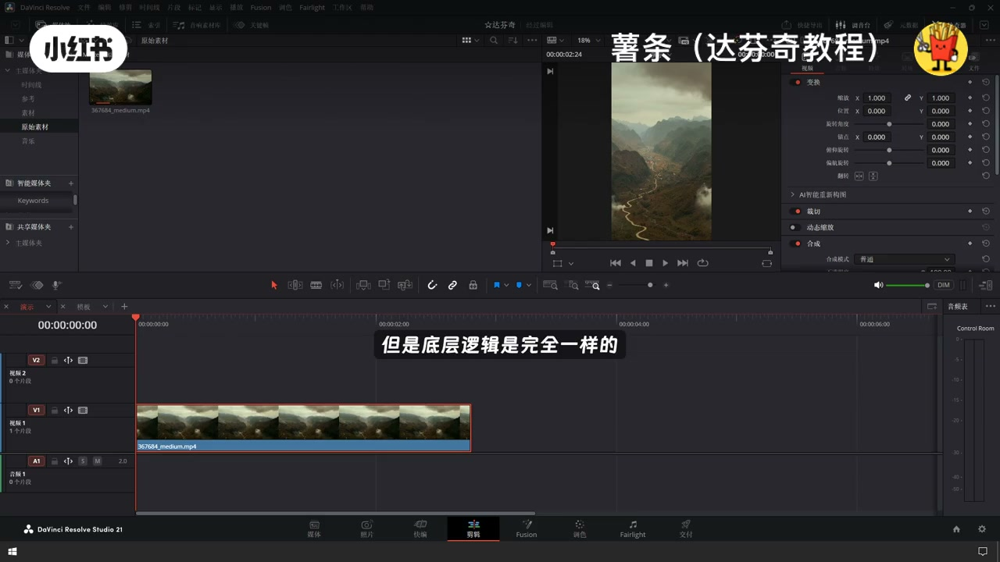
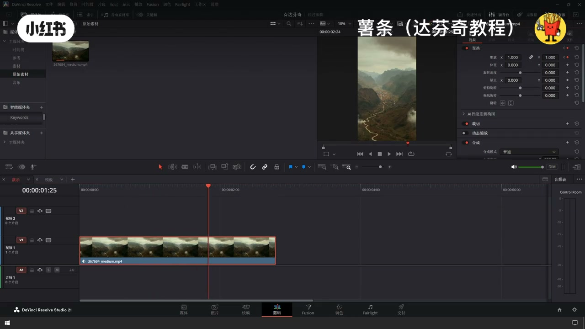
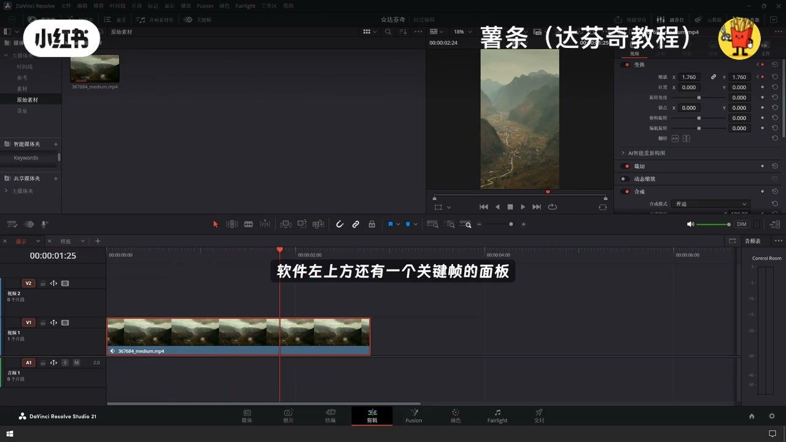
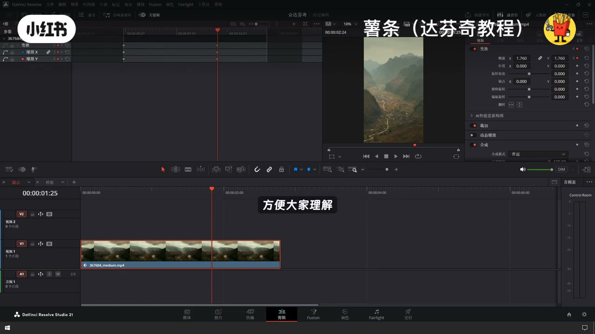
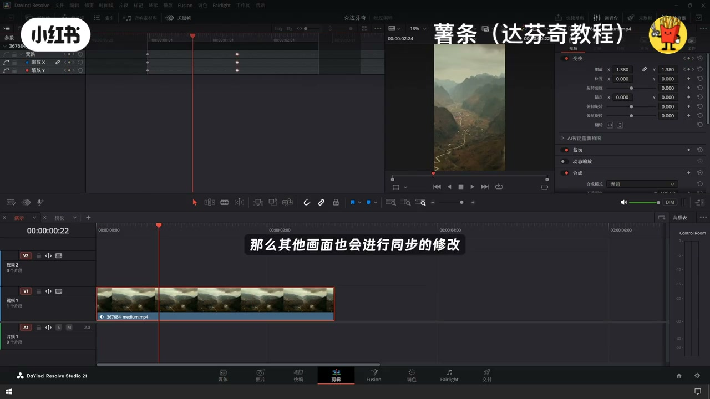
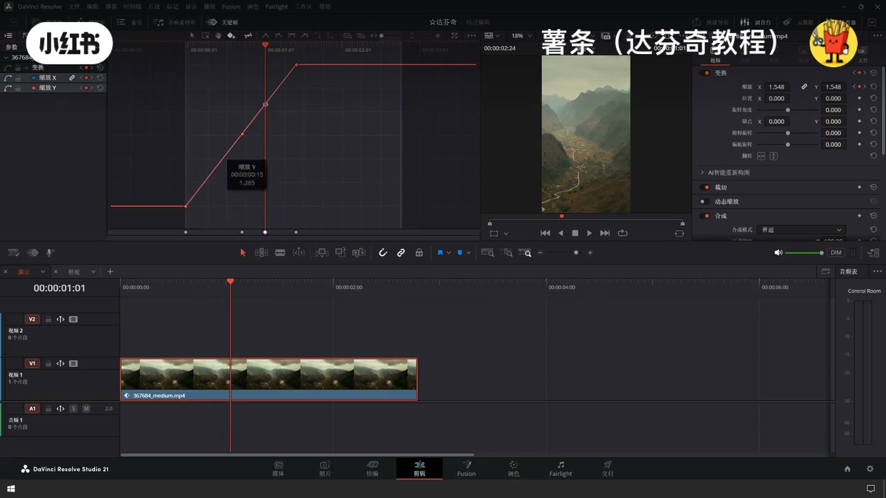
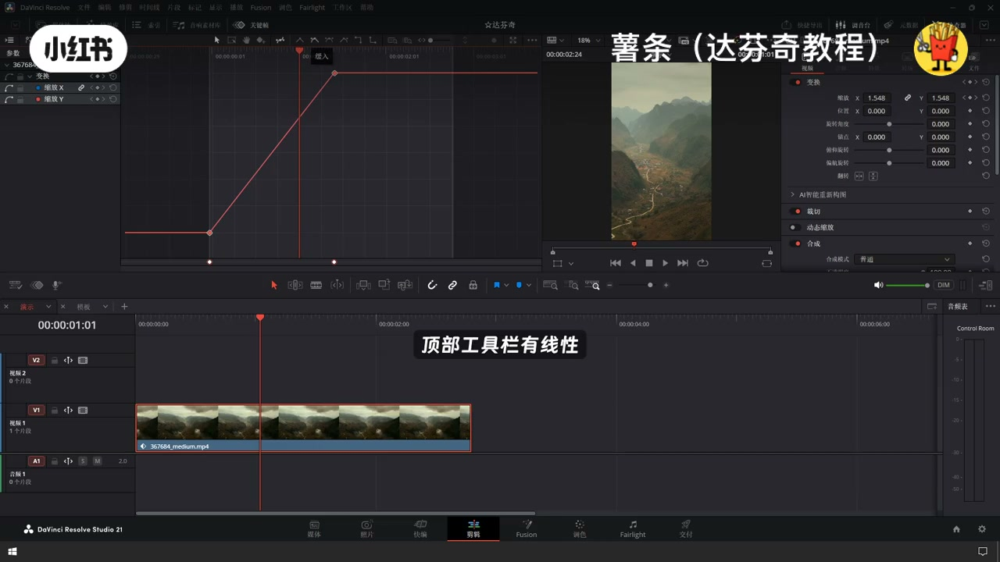

内容要点
「达芬奇关键帧基础介绍丨常用技巧干货剪辑」教程要点：如果达芬奇剪辑的时候 → 很多小伙伴都没有搞懂关键帧 → 今天一次性讲个不败 → 剪辑页面角色页面还有Fish页面都有关键帧…
知识结构
如果达芬奇剪辑的时候
关键帧分为关键帧曲线跟关键帧通道
也可以在关键帧的上方点击上方的
- 如果达芬奇剪辑的时候
- 很多小伙伴都没有搞懂关键帧
- 今天一次性讲个不败
- 剪辑页面角色页面还有Fish页面都有关键帧
- 但是底层逻辑是完全一样的
如果达芬奇剪辑的时候
00:00–00:53如果达芬奇剪辑的时候
如果达芬奇剪辑的时候；很多小伙伴都没有搞懂关键帧；今天一次性讲个不败；剪辑页面角色页面还有Fish页面都有关键帧；但是底层逻辑是完全一样的；先看剪辑页面我们打开检查器；几乎每一项选项都可以打上关键帧；这个小菱形的图标就是关键帧的意思；我们现在在时间线上点一下；红色就代表已经打上了关键帧；我们把时间线往后拖动；再点击这个小菱形；那么在两个时间线中间；就会自动产生关键帧的变化；我现在把这个缩放的数字给它调大一点；播放欲望看一下效果；这就是关键帧最基础的操作；软件左上方还有一个关键帧的面板；点开之后就可以查看我们的关键帧


00:53–01:41关键帧分为关键帧曲线跟关键帧通道
关键帧分为关键帧曲线跟关键帧通道；关键帧曲线和关键帧通道是相互对应的；只是展示的形式不同；在做变速效果的时候；我们主要用到的是关键帧曲线；这里我选择直显示带有关键帧的参数；方便大家理解；刚才只给缩放打了关键帧；贴保就会出现缩放这一个选项；拖动时间线指针画面就会跟着一起变换；我们刚刚打了两个关键帧；所以这里出现了两个关键帧；点击这两个它都会同步进行调整；在这里进行修改；那么其他画面也会进行同步的修改；添加关键帧的方式有很多种；第一种就是像刚才讲在检查器面板里面；点击零行直接添加关键帧；也可以打开关键帧面板添加


01:42–02:36也可以在关键帧的上方点击上方的
也可以在关键帧的上方点击上方的；工具栏进行添加；或者是按住Alt键快速进行添加；我们可以给关键帧的变换做缓入缓出；现在的这条直线动画过渡是很生硬的；我们选中曲线；顶部工具栏有线性缓入；缓入如缓出；选择缓入如缓出；那么这部变换就会变得柔和；曲线还有调节控制线；可以精准的去调整动画的节奏；这里的X左右就代表着我们的时间线；我们的播放头跟随时间线变换；外轴代表的是参数变换；那么这里代表的是我们变换的起点；上方代表的是我们变换的终点；上下拖动就代表是变换的辅助



口述/画面要点（40段）
结合 Whisper medium 与画面大字整理；专有名词已校对。
如果达芬奇剪辑的时候
很多小伙伴都没有搞懂关键帧
今天一次性讲个不败
剪辑页面角色页面还有Fish页面都有关键帧
但是底层逻辑是完全一样的
先看剪辑页面我们打开检查器
几乎每一项选项都可以打上关键帧
这个小菱形的图标就是关键帧的意思
我们现在在时间线上点一下
红色就代表已经打上了关键帧
我们把时间线往后拖动
再点击这个小菱形
那么在两个时间线中间
就会自动产生关键帧的变化
我现在把这个缩放的数字给它调大一点
播放欲望看一下效果
这就是关键帧最基础的操作
软件左上方还有一个关键帧的面板
点开之后就可以查看我们的关键帧
关键帧分为关键帧曲线跟关键帧通道
关键帧曲线和关键帧通道是相互对应的
只是展示的形式不同
在做变速效果的时候
我们主要用到的是关键帧曲线
这里我选择直显示带有关键帧的参数
方便大家理解
刚才只给缩放打了关键帧
贴保就会出现缩放这一个选项
拖动时间线指针画面就会跟着一起变换
我们刚刚打了两个关键帧
所以这里出现了两个关键帧
点击这两个它都会同步进行调整
在这里进行修改
那么其他画面也会进行同步的修改
添加关键帧的方式有很多种
第一种就是像刚才讲在检查器面板里面
点击零行直接添加关键帧
也可以打开关键帧面板添加
也可以在关键帧的上方点击上方的
工具栏进行添加